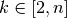

rarefact¶
rarefact calculates phylogenetic rarefaction curves.
usage: rarefact [options] placefile
Options¶
| --pp | Use posterior probability for the weight. |
| -o | Specify the filename to write to. |
| --out-dir | Specify the directory to write files to. |
| --prefix | Specify a string to be prepended to filenames. |
| --csv | Output the results as csv instead of a padded matrix. |
| --variance | Calculate variance of phylogenetic entropy. |
| --weight-as-count | |
| Interpret (integer) weights on pqueries as counts. | |
| -k | The highest value of k to calculate. |
Details¶
Calculate phylogenetic rarefaction curves.
For every , where n is the number of pqueries in a
placefile, subsample the given placefile to contain every combination of
 pqueries and calculate the mean and variance of phylogenetic divesity
for all of these subsampled placefiles.
pqueries and calculate the mean and variance of phylogenetic divesity
for all of these subsampled placefiles.
The rooted_mean and rooted_variance columns are respectively the mean and variance of the phylogenetic diversity only requiring mass on the distal side of the edge (which normally requires mass proximal and distal to the edge).
For more details, see Nipperess and Matsen.